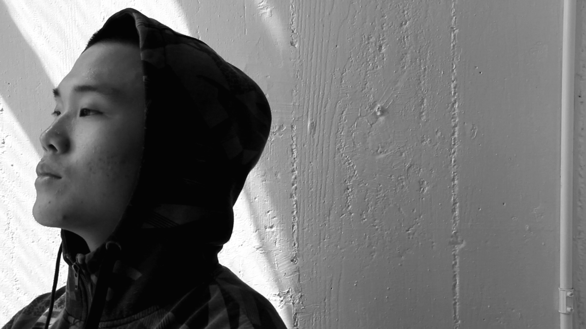
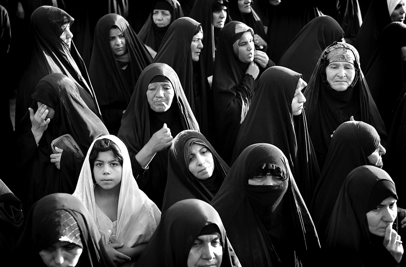

Story deckhead here and here and here and here and here

By Mike Swartz, Matt Thompson and Dave Wright
In February, the Harlem Shake meme was everywhere — rooms full of people recording themselves flailing about, humping things, and gyrating goofily Underwater. On planes. College students. Office workers. The Miami Heat. All of them pumped out videos with their distinct, absurdist takes on the craze.
But the videos got under a lot of people’s skins. The Harlem Shake — the real Harlem Shake, which bore almost no meaningful relationship to the popular meme — is a dance that’s been around for decades in the New York City neighborhood for which its named. Was this year’s viral video meme, started and popularized by white kids, just good-humored fun? Was it mocking? Was it hijacking? A defiant graffiti mural popped up on an uptown wall: Do The Real Harlem Shake.
If that sounds touchy, consider the anxieties that are roiling in the actual Harlem. Charlie Rangel, who has represented the neighborhood in Congress for decades, survived a stiff challenge to re-election from Reuben Espaillat, a Dominican state legislator who represents the burgeoning Latino political bloc in Washington Heights, just to Harlem’s north — but he may not be so fortunate next year.# Young white professionals who want to stay in Manhattan have been flocking to the neighborhood. In recent years, Harlem, as ready a shorthand for black life as there is in America, is steadily becoming less, well, black.
This question — this crisis of cultural ownership — will be one of the thorniest dilemmas Americans will have to confront in the next decades as the United States goes through sweeping demographic changes. You’ve probably heard the numbers before, but they bear repeating: by 2043, the majority of the U.S. will be nonwhite. Our major cities are getting whiter as our suburbs become brown and polyglot. Early in the 20th Century, W.E.B. DuBois said that the problem confronting the U.S. in the 20th century would be the color line. This century’s will be what happens as that line is redrawn and gets blurrier.
For most of American history, the country’s racial dynamics have been cast in crudely black-and-white terms — African Americans on one side, whites on the other, and everyone else falling onto some continuum in between. But our country’s racial dynamics are now technicolor, and that old framing is being shaken up.
Chapter II. Other People's Property
Back in the 1960s, a white comedy writer Bill Dana created the buffoonish, intermittently intelligible Mexican caricature Jose Jimenez for The Steve Allen Show. Audiences ate up the character, who returned regularly to the show for some heavily accented shenanigans, even though the whole joke is Jimenez talked funny. Not long after the character’s debut, Mickey Rooney donned big prosthetic teeth, squinted his eyes and ching-chonged his way through Breakfast at Tiffany’s as Mr. Yunioshi, Audrey Hepburn’s creepy Japanese neighbor. ("Miss Go-right-ry!”) [EMBED A STILL OF ROONEY]
They were both great-grandnephews of the minstrel, which for a few decades in the early 1800s was the country’s most popular form of entertainment. White performers dressed in blackface and acted out horrible caricatures of black slaves — singing Negro spirituals and engaging in slapstick, and it was marketed as authentic black culture, especially to Northerners who didn’t know much about plantation life.
By the time Jimenez was, uh, uncorked, white folks dressing up like nonwhite folks had become an established American tradition. Folks write this stuff off as as insensitive caricature now, but these ideas also propped up a bunch of ugly myths about nonwhites — too dumb, too lazy, too untrustworthy — that helped justify all kinds of discrimination. But it was white folks getting a lot of say and a lot of money from the way other cultures were represented.
This wasn’t limited to cinema and television . Back in the early days of rock and roll, it wasn’t uncommon for different musicians to cover different versions of the same songs, sometimes within weeks of each other. But the country’s racial politics were carrying over to this ostensibly open-source approach to music; there was a Billboard chart for black music, while Pat Boone, who could perform in venues and hawk products that black performers couldn’t, made a lot of money recording popular whitebread renditions of songs that had already been the hits by black musicians.# [EMBED FATS DOMINO; BOONE VIDEO]
[A SHORT HISTORY OF APPROPRIATION VIA THE BILLBOARD CHARTS; BLACK MUSIC CHARTS]
A lot of stuff happened in the interim — Motown and the first sustained dominance of black music on the pop charts, the British invasion, fueled by white dudes from Kent who were trying to sing like Chuck Berry. But let’s fast forward to the last decade of the 20th century. While hip-hop had been making steady inroads among pop music fans, Vanilla Ice’s 1990 hit “Ice, Ice Baby” was the first hip-hop song to top the Billboard charts. And although we all liketo pretend now that the whole Vanilla Ice thing never happened, for a brief period, he was the most famous practitioner of a brand of music associated with and performed by black people. Stations that never played hip-hop were playing Vanilla Ice. It looked like Elvis all over again — this dangerous, declassé musical form getting whitened up and made palatable. Here was black cool, yet again, being turned into some other stuff. “Where rap, at its core, reflects the anger or humor of young blacks, Vanilla Ice's lyrics are a thematic descendant of the Beach Boys rather than the Black Panthers or Richard Pryor,” James Bernard wrote in the New York Times in 1991.
Damn, folks thought. We can’t have nothing for ourselves.
Vanilla Ice would be relegated to footnote status in the story of hip-hop’s eventual global takeover. But from its beginnings in the South Bronx, for decades the poorest urban congressional district in the United States, hip-hop had been a multi-ethnic affair, with blacks, Latinos and Caribbean immigrants fashioning a new musical form and culture out of what was literally laying around in their family’s old record collections.
(There’s a not-insubstantial irony at the core of the anxieties over hip-hop’s co-optation: hip-hop’s DNA was all about taking but of other stuff — or, you know, appropriation — of disco and soul and rock and weird shit like Kraftwerk and making it into something totally different.#) Latino rappers, from Kid Frost to Mellow Man Ace# to Fat Joe to N.O.R.E., have never been seen as outsiders or interlopers. This is partly because racial identity gets to be more fluid among people of color; the “brown people” umbrella can expand out pretty wide. But white rappers still stir anxieties about cultural theft.
Why?
Hip-hop has become black and fill-in-the-blank. It’s authenticity comes from its association with black people, but people everywhere have glommed onto it. If hip-hop is everywhere and everyone trafficks in it, who gets to police it for realness? Why can’t Macklemore, the Seattle rapper whose Thrift Shop is an ode to the joys of scoring sweet secondhand clothes, opine on homophobia in hip-hop? Isn’t hip-hop his culture, too?
But what happens when hip-hop itself becomes the baseline for culture? At what point are white kids just part of it, hip-hop?
Cecelia Cutler, a linguist at New York’s Lehman College, says that now young white or Asian kids traffic in hip-hop vernacular — even if they aren’t themselves hip-hop fans. They’re not trying to mimic blackness, Cutler says, but calling upon pieces of it to signal (or “index,” as linguists like to say) some of the postures that folks associate with hip-hop — coolness, toughness, hipness. Or in a word: swagger.
Cutler said that hip-hop inflected black speech has become a prestige English among young people, both in the United States and globally.
"Maybe what we're dancing around is that hip-hop has lost its identification with race."
The jump then from the affected posturing of Vanilla Ice to the Macklemore’s unabashed whiteness only took two decades. Does hip-hop authenticity no longer needs the imprimatur of black impresarios or even black audiences?
“Unlike other white MC’s, [Macklemore’s] doing the “Portlandia” thing, he’s not fronting or trying to establish authenticity through blackness,” said Josh Kun, a professor at the University of Southern California who writes about race and popular music. “Maybe what we’re dancing around is that hip-hop has lost its identification with race,” Kun said, even as he stressed that that idea made him pretty uncomfortable.
Kun said that his students are a whole lot less concerned with “proprietary histories,” the idea that certain people might have a unique claim to authentically interact with certain kinds of culture without being seen as appropriators, than he himself might be. “For the most part, the idea that this is original and authentic to something, they’re not so worried,” he said. “They’re like ‘Whatever, dude it’s in my iTunes library. Can’t I just cut it up [to sample it]?’”
And ironically, hip-hop’s omnivorousness — to say nothing of technology that allows everyone to sample anything from anywhere— has made culture more “horizontal,” Kun said.
H. Samy Alim, a linguist at Stanford, said that there’s a school of thought of that holds that, well, there’s no such thing as cultural ownership, that no bit of culture is off-limits from being glommed onto or lopped off and reimagined by someone else. “For some theorists, they might write about it as just a neutral term: that ‘I am appropriating X Y and Z.’ Or ‘Am I appropriating? Well, whose is in it anyway? Is there ever an original owner of anything?’
But he adds that context matters. “The reason why there’s so much tension around that is because all of these things are happening — people are using different cultural elements and mixing them and there’s are all these collages — but they’re happening in a racially discriminatory context in which people are not equal,” he said. “So culture becomes contested, becomes a battleground for people who are materially dispossessed but are culturally rich.”

Chapter III. Everyone Assimilates
A few years ago, Dumbfoundead, an indie rapper from Southern California, ginned up some online buzz for his song, “Are We There Yet.” The song might have sounded like textbook contemporary hip-hop — the bedding of a beautiful woman, the obligatory humblebrag about his success, and the anxieties of both — if not for the moving, deft verse in which he recounts the sacrifice his mother made by fleeing Korea and sneaking him over the Mexican border into the United States. [EMBED DFD’S ‘ARE WE THERE YET’ VIDEO]
Has hip-hop become so big that it’s subsumed not just other musical forms but also other identities? Has hip-hop created entirely new ethnic groups?
If that sounds like overstatement, consider what’s happening in communities like East Palo Alto, CA. Although it’s just across the tracks from Palo Alto, the Silicon Valley hub and home of Stanford, it’s a different world — less wealthy and much, much browner, with a macedoine of languages and ethnicities.
“Pacific Islanders, Tongans, Samoans, Fiji — they’re from everywhere,” said Alim. “Latinos, not just Mexicans, Salvadorenos, Guatemalans — you have African Americans, you have Indian Americans.”
Over the last two decades, the once-majority black city has become mostly Latino, and its Pacific Islander population is now larger than its black population.
“There are so many different languages going on in that community, and the one language that sort of unites them all is African American language, even though African Americans are no longer the dominant population,” Alim said.
Young people in the city especially are using hip-hop inflected black speech as their lingua franca, and as part of how they orient themselves to the rest of the world. “There’s an identification with that identity that as recognized as black but as more than black — as a class identity, as a regional identifier — as something ‘we’ do inside this community,” he said.
And as it is with other identities, the members of the group police the boundaries — there are rules and mores. People will check each other if someone is using their speech in a way that mocks it or props up stereotypes, Alim said — “not even by black people alone but by someone else who is identifying with black language.”
For the children of these immigrant communities, hip-hop’s idioms and slang are their entree into American life.#
But this kind of thing isn’t just happening in America. Hip-hop’s global reach has made it the vector for all sorts of ideas about America and blackness. But also an effective transmitter of linguistic norms.
Cutler, the linguist from Lehman College, said that this pattern was repeating itself in Europe. In Norway, for example, the biggest immigrant group is people of Pakistani descent. For people there in the country who aren’t ethnic Norwegians — in other words, who aren’t white people — Pakistani-ness has begun to function as a kind of shorthand for nonwhiteness and coolness. Young people from the other immigrant populations are adopting the speech patterns and the slang they associated young Pakistani people. But those speech patterns borrow heavily from American hip-hop.
“It becomes a universal youth language among immigrants,” Cutler said. “They’re not being accepted as Norwegians and they’re doing it to mark themselves off.”
Linguists call language that’s used this way in order to signal membership to an identity group “ethnolects,” and Cutler says Europe is full of hip-hop-inflected ethnolects patterned after the language of a given country’s biggest nonwhite group.
“In Germany, it’s Turkish. In the Netherlands, it’s the Moroccans,” she said. “In England, it’s the Jamaican patois that’s stylized and symbolizes hipness and coolness.”

{kind=link}
1280 Comments